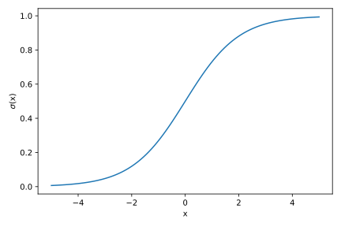
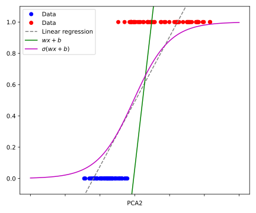
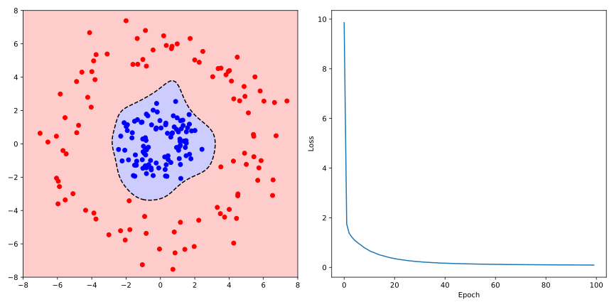

Single-Layer-Perzeptron
Wir betrachten zunächst das einfachste neuronale Netzwerk, das sogenannte Single-Layer-Perzeptron (SLP). Den Begriff des Perzeptrons kennen Sie bereits aus dem vorherigen Abschnitt über binäre Klassifikation und bezeichnet ein Modell, das einen beliebigen Eingabevektor auf eine binäre Ausgabe abbildet.
Um die Idee eines neuronalen Netzwerks zu verstehen, bzw. eines einzelnen künstlichen Neurons, müssen wir jedoch zunächst zurück auf die (Sie haben es wahrscheinlich schon befürchtet) lineare Regression blicken, genauer gesagt auf die Klassifikation mittels linearer Regression. Wir hatten bereits gesehen, dass sich die lineare Regression für die binäre Klassifikation aufgrund von zwei Problemen nicht eignet:
- Die Ausgabe der linearen Regression ist kontinuierlich, d.h. sie kann beliebige Wert zwischen und annehmen, während wir für die binäre Klassifikation nur zwei Werte benötigen (z.B. 0 und 1).
- In der Klassifikation sind die Labels in der Regel nicht geordnet, d.h. es gibt keine natürliche Ordnung zwischen den Klassen.
Wohingegen wir das erste Problem dadurch lösen konnten, dass wir die Ausgabe denjenigen Labels der Klassen zugewiesen haben, die der Ausgabe am nächsten liegen, zeigt das zweite Problem, dass Klassifikation und Regression grundlegend verschieden sind. Nach Vertauschen der Labels würde sich bei nur zwei Klassen das Vorzeichen der Ausgabe ändern, was wir durch Umkehrung der Entschiedungsgrenze kompensieren könnten. Bei mehr als zwei Klassen würde eine Vertauschung der Labels jedoch zu einer Änderung der Ausgleichsgeraden führen, was zeigt, dass wir die lineare Regression nicht für die Klassifikation mit mehr als zwei Klassen verwenden können.
Logistische Regression
Wir nehmen an, dass und für . Die Klassenlabels sind also entweder 0 oder 1, d.h. wir haben eine binäre Klassifikation. Anstatt nun wie zuvor, die kontinuierliche Vorhersage des Models eindeutig einem Label zuzuweisen, können wir die Ausgabe als eine Wahrscheinlichkeit interpretieren, dass das vorhergesagte Label des Datenpunkt gleich 1 ist. Die Wahrscheinlichkeit, dass gleich 0 ist, ist dann . Dazu muss aber die Ausgabe des Modells so transformiert werden, sodass sie im Intervall liegt. Eine Möglichkeit ist die Verwendung der logistischen Funktion
die auch als Sigmoid-Funktion bekannt ist und die reellen Zahlen auf das Intervall abbildet:

Unser Model lautet dann
was als logistische Regression (engl. logistic regression) bezeichnet wird. Beachten Sie, dass trotz des Namens die logistische Regression ein Klassifikationsmodell ist.
Wie finden wir nun die optimalen Parameter und , sodass die Vorhersage des Modells für alle Datenpunkte möglichst gut mit den tatsächlichen Labels übereinstimmt? Dazu benötigen wir eine Objektivfunktion, die uns sagt, wie gut unser Modell die Daten beschreibt. Die Interpretation der Ausgabe als Wahscheinlichkeit legt nahe, dass wir versuchen sollten, die Wahrscheinlichkeit zu maximieren (bzw. ). Über alle Datenpunkte können wir also das Produkt der Wahrscheinlichkeiten
maximieren, welches als die sogennante Likelihood bezeichnet wird. gibt also an, wie wahrscheinlich es ist, die tatsächlichen Datenpunkte durch unser Modell zu erhalten, welches durch die Parameter beschrieben wird. Der Ansatz, die Likelihood zu maximieren, wird als Maximum-Likelihood-Estimation (MLE) bezeichnet und ist eines der wichtigsten Prinzipien in der Statistik.
Da unsere Labels entweder 0 oder 1 sind, können wir die Likelihood auch als Produkt der Wahrscheinlichkeiten schreiben, dass für die Datenpunkte mit und für die Datenpunkte mit ist:
Diese Funktion zu maximieren bedeutet, dass wir die Ableitung nach den Parametern berechnen müssen. Da die Likelihood ein Produkt ist, ist es einfacher, den Logarithmus der Likelihood zu maximieren, da der Logarithmus eines Produkts die Summe der Logarithmen der Faktoren ist. Um zudem etwas analoges zu einer Verlustfunktion zu erhalten, minimieren wir stattdessen den negativen Logarithmus der Likelihood:
Sie können sich als Übungsaufgabe davon überzeugen, dass die Gradienten der Verlustfunktion nach den Parametern und gegeben sind durch
Da leider keine geschlossene Lösung für die Parameter existiert, welche die Gleichung löst, wenden wir wieder das stochastische Gradientenverfahren an, um die Parameter iterativ zu optimieren.
Implementierung der logistischen Regression
Die Implementierung der logistischen Regression ist einfach umzusetzen, da sie sich nur geringfügig von den bisherigen Modellen unterscheidet.
import numpy as np
import matplotlib.pyplot as plt
import pandas as pd
# Define model class
class Logistic_Regression:
def __init__(self, dim=2, tau=0.1, epochs=100):
self.tau = tau
self.epochs = epochs
self.weights = np.random.rand(dim)
self.bias = 0
def sigmoid(self, x):
return 1 / (1 + np.exp(-x))
def fit(self, X, y):
N = X.shape[0]
for e in range(self.epochs):
print(f"Epoch {e + 1}/{self.epochs}")
for xi, yi in zip(X, y):
self.weights += self.tau / N * (yi - self.sigmoid(self.net_output(xi))) * xi
self.bias += self.tau / N * (yi - self.sigmoid(self.net_output(xi)))
def net_output(self, x):
return np.dot(x, self.weights) + self.bias
def predict(self, x):
return np.where(self.net_output >= 0, 1, 0)
Wir wenden die logistische Regression auf die Daten der Eigenfaces an, welche wir bereits für das Rosenblatt-Perzeptron verwendet haben. Um die Vorhersage des Modells anschaulich darzustellen, verwenden wir allerdings nur eine Dimension der Daten:
# Load the data
path = './eigenfaces_pca.csv'
df = pd.read_csv(path, sep=';')
# Define data matrix and labels
X = df[["pca2"]].to_numpy() # take only one feature for simplicity
y = df["label"].to_numpy()
# Normalize data
X = (X - X.mean()) / X.std()
y[y == -1] = 0 # change -1 to 0
# Define hyperparameters
dim = X.shape[1]
tau = 0.1
epochs = 100
# Instantiate the model
LR = Logistic_Regression(dim=dim, tau=tau, epochs=epochs)
# Fit the model
LR.fit(X, y)
# Make predictions
x_grid = np.linspace(-3, 3, 100)
decision_line = np.array([LR.net_output([x]) for x in x_grid])
# Perform simple linear regression for comparison
beta_1, beta_0 = np.polyfit(X.flatten(), y, 1)
# Plot the data and decision line
fig, ax = plt.subplots(figsize=(6, 5))
ax.plot(X[y == 0], y[y == 0], 'o', color='b', label='Data')
ax.plot(X[y == 1], y[y == 1], 'o', color='r', label='Data')
ax.plot(x_grid, beta_1 * x_grid + beta_0, 'grey', linestyle='--', label='Linear regression')
ax.plot(x_grid, decision_line, 'g', label=r'$w x + b$')
ax.plot(x_grid, LR.sigmoid(decision_line), 'm', label=f'$\sigma(w x + b)$')
ax.set_ylim(-0.1, 1.1)
ax.set_xticklabels([])
ax.set_xlabel('PCA2')
plt.legend()
fig.tight_layout()
plt.show()
Wir erhalten den folgenden Plot, wobei wir als Referenz auch die naive lineare Regression hinzugefügt haben:

Für die logistische Regression anhand der zwei Dimensionen, in welcher die Daten linear separierbar sind, erhalten wir übrigens die folgende Abbildung. Das Modell klassifiziert die Daten im Gegensaatz zur linearen Regression korrekt:

Es ist dabei anzumerken, dass die sigmoide Vorhersage des Modells, also die Wahrscheinlichkeit , für linear separierbare Datenpunkte gegen die sogenannte Heaviside-Funktion konvergiert
die eine einfache Stufenfunktion dastellt.
Auch wenn die logistische Regression deutlich besserere Ergebnisse liefert als die lineare Regression, müssen wir zur entgültigen Klassifizierung von neuen Datenpunkten eine Entscheidungsgrenze festlegen, z.B. . Damit haben wir jedoch wieder das Problem, dass wir nur lineare Entscheidungsgrenzen erhalten, die nicht immer die beste Trennung der Datenpunkte ermöglichen. Dies wird anhand des sogennanten XOR-Problems deutlich, was Ende der 60er Jahre zu einem Stillstand in der Entwicklung von neuronalen Netzwerken geführt hat.
Um zu verstehen, wie wir das Modell (6.1) erweitern können, betrachten wir zunächst die Vorhersage der logistischen Regression in einem sogenannten Rechengraphen (engl. computational graph):
Dabei repräsentieren die Knoten die Eingabedaten, welche entlang der Kanten mit den Gewichten multipliziert werden. Die Knoten und stellen dann die Rechenoperation der Summation und der Sigmoid-Aktivierungsfunktion der eingehehenden Daten dar, wobei wir die Addition des Bias implizit angenommen haben. Basierend auf der Ausgabe kann dann das Label oder Target bestimmt werden. In Anlehnung an die biologischen Neuronen, bezeichnet man diese Rechenoperation als künstliches Neuron. Damit stellt die logistische Regression bereits ein einfaches künstliches neuronales Netzwerk dar, das aus einem einzigen Neuron besteht.
Neuronen, oder auch Nervenzellen, sind die Grundbausteine des Nervensystems und bilden die Grundlage für die Informationsverarbeitung im Gehirn. Ein Neuron ist im wesentlichen eine elektrisch erregbare Zelle, die in der folgenden Abbildung schematisch dargestellt ist:
Sie besteht aus einem Zellkörper, den Dendriten, die die eingehenden Signale empfangen, und dem Axon, das die Signale weiterleitet. Durch Akkumulieren der Signale an den Dendriten wird ein elektrisches Potential aufgebaut. Wenn das Potential zusammen mit dem eigenen Restpotential einen Schwellwert überschreitet, wird ein elektrischer Impuls, das sogenannte Aktionspotential, entlang des Axons weitergeleitet. Am Ende des Axons wird der Impuls auf andere Neuronen übertragen, wobei die Synapsen die Verbindungen zwischen den Neuronen darstellen. Dieses Prinizip wird häufig als Alles-oder-Nichts-Prinzip bezeichnet. Man sagt auch, dass ein Neuron entweder feuert oder nicht.
Sie können nun selbst die Parallelen zwischen den biologischen Neuronen und den künstlichen Neuronen ziehen oder auch die Unterschiede erkennen.
Single-Layer-Perzeptron
Wir können das Modell der logistischen Regression nun erweitern, indem wir mehrere künstliche Neuronen miteinander verknüpfen. Die Eingabe wird dabei zunächst an zwei oder mehrere Neuronen weitergeleitet, die jeweils eine eigene Gewichtung und Aktivierungsfunktion besitzen. Die Ausgabe der Neuronen wird dann (in Analogie zu den biologischen Neuronen) an ein weiteres Neuron weitergeleitet, welches diese Signale erneut gewichtet und aufsummiert. Ggf. kann diese gewichtete Summe noch durch einen Bias ergänzt und durch eine weitere Aktivierungsfunktion modifiziert werden. Dieses Modell wird als Single-Layer-Perzeptron (SLP) bezeichnet, da es nur eine eine einzelne Schicht an versteckten Neuronen besitzt.
Mit der Notation , , und kann die zugrundeliegende Rechenoperation des SLPs als
dargestellt werden, wobei , und lernbare Parameter sind, und die Aktivierungsfunktion der Neuronen darstellt. Unter Verwendung der Matrix und der Vektoren und kann dies auch als Skalarprodukt
geschrieben werden. Der detaillierte Rechengraph des SLP ist in der folgenden Abbildung dargestellt:
Auch wenn wir auf den ersten Blick nur minimale Änderungen vorgenommen haben, erlaubt uns das Einführen einer einzelnen versteckten Schicht (engl. hidden layer) bereits nichtlineare Entscheidungsgrenzen zu modellieren. Tatsächlich können wir mit dem SLP, sofern wir eine nichtlineare Aktivierungsfunktion wählen, jede beliebige Funktion approximieren, was als das universelle Approximationstheorem bezeichnet wird.
Das universelle Approximationstheorem besagt, dass ein neuronales Netzwerk mit mindestens einer versteckten Schicht und einer nichtlinearen Aktivierungsfunktion jede beliebige Funktion approximieren kann, sofern genügend Neuronen in der versteckten Schicht vorhanden sind. Mathematisch ausgedrückt bedeutet dies, dass für jede stetige Funktion und für jedes ein neuronales Netzwerk existiert, sodass der Fehler für alle gilt.
Der Beweis des Theorems ist simpel, sofern man einige Kenntnisse der Funktionalanalysis besitzt. Da dies jedoch den Rahmen dieses Kurses sprengen würde, bieten wir im Folgenden eine interaktive und stark vereinfachte Visualisierung des Theorems an. Dabei beschränken wir uns auf die Approximation einer einfachen Funktion durch ein SLP mit einer versteckten Schicht, die aus 2 Neuronen besteht. Mit den Slidern können Sie die Parameter , und der Neuronen verändern und die beste Approximation der Funktion durch das SLP finden. Wir möchten Sie dazu ermuntern, auch die Zielfunktion zu ändern oder die Anzahl der Neuronen zu erhöhen, um die Approximation zu verbessern.
import numpy as np
import matplotlib.pyplot as plt
from ipywidgets import interact, FloatSlider
#%matplotlib inline
# Define the sigmoid activation function
def sigmoid(x):
return 1 / (1 + np.exp(-x))
# Initialize weights and biases
w = np.random.randn(2)
b = np.random.randn(2)
a = np.random.randn(2)
# Define the neural network forward pass
def neural_network(x, w, b, a):
h = np.dot(w, x) + b
return np.dot(a, sigmoid(h))
# Plotting function with sliders
def plot_network(w0, w1, b0, b1, a0, a1):
# Update weights and biases based on slider values
w = np.array([w0, w1])
b = np.array([b0, b1])
a = np.array([a0, a1])
# Generate input values and compute network output
x_values = np.linspace(-10, 10, 400)
y_values = [neural_network(x, w, b, a) for x in x_values]
# Target function
f = lambda x: np.exp(-x**2)
# Plotting
fig, ax = plt.subplots(figsize=(8, 6))
ax.plot(x_values, y_values, label='SLP output')
ax.plot(x_values, f(x_values), label='Target function')
ax.set_xlabel('Input')
ax.set_ylabel('Output')
ax.legend()
plt.show()
# Create sliders for weights and biases
interact(plot_network,
w0=FloatSlider(value=w[0], min=-5, max=5, step=0.1),
w1=FloatSlider(value=w[1], min=-5, max=5, step=0.1),
b0=FloatSlider(value=b[0], min=-5, max=5, step=0.1),
b1=FloatSlider(value=b[1], min=-5, max=5, step=0.1),
a0=FloatSlider(value=a[0], min=-5, max=5, step=0.1),
a1=FloatSlider(value=a[1], min=-5, max=5, step=0.1))
Damit das SLP-Modell, also das neuronale Netzwerk mit einer versteckten Schicht, die Zielfunktion approximieren kann, müssen wir die Parameter , und so anpassen, dass der Fehler zwischen der Vorhersage und dem tatsächlichen Wert minimiert wird. Dies ist das normale Vorgehen im überwachten Lernen, wobei wir die Verlustfunktion
minimieren wollen. Dazu müssen wir die Gradienten der Verlustfunktion nach den Parametern , und berechnen, um diese mit Hilfe des Gradientenverfahrens zu optimieren. Unter Verwendung der Kettenregel, der Definition des SLPs in Gl. (6.3) sowie der Hilfsvariable können die Gradienten wie folgt berechnet werden:
Dabei bezeichnet das elementweise Produkt der Vektoren und die Ableitung der Aktivierungsfunktion (hier der Sigmoid-Funktion). Beachten Sie auch, dass wir bei der Berechnung der Gradienten die Transponierung der Matrizen und Vektoren berücksichtigen müssen, um die Dimensionen korrekt zu erhalten.
Neben dem ursprünglichen Gradientenverfahren, welches den Gradienten der gesamten Datenpunkte nutzt, kennen wir bereits das stochastische Gradientenverfahren. Dabei wir der Gradient nur für einen (zufällig) ausgewählten Datenpunkt berechnet und die Parameter anschließend angepasst, was insbesondere bei sehr großen Datensätzen effizienter ist. Eine weitere sehr effiziente Methode ist das sogenannte Mini-Batch-Gradientenverfahren, was sozusagen eine Mischung aus den beiden Verfahren darstellt. Dabei wird der Gradient für eine kleine, zufällig ausgewählte Teilmenge an Datenpunkten berechnet, der sogenannte Batch, und die Parameter entsprechend angepasst. Die Größe der Teilmenge (Batch-Size) kann dabei variabel gewählt und anhand der Verfügbaren Rechenressourcen angepasst werden.
Die Aktualisierung der Parameter erfolgt dann wie folgt:
wobei die Lernrate darstellt und die Verlustfunktion für einen Datenpunkt ist.
Implementierung des Single-Layer-Perzeptrons
Wir implementieren zunächst die Aktivierungsfunktion und deren Ableitung, die wir für die Berechnung
der Gradienten benötigen. Dazu nutzen wir ebenfalls eine Klasse. Dank der __call__-Methode können wir das
Objekt dann wie eine herkömmliche Funktion verwenden.
import numpy as np
import matplotlib.pyplot as plt
import pandas as pd
# Define activation function class
class Sigmoid:
def __call__(self, x):
return 1 / (1 + np.exp(-x))
def gradient(self, x):
return self(x) * (1 - self(x))
Die __init__-Methode der Klasse SLP sollte keine Überraschungen bereithalten. Wir initialisieren
die Parameter des Modells , und zufällig und instanziieren die Sigmoid-Klasse.
Neu ist auch, dass wir die Batch-Size festlegen müssen:
# Define model class
class SLP:
def __init__(self, dim=2, hidden_size=2, activation='Sigmoid', epochs=100, tau=0.1, batch_size=5):
self.weights = np.random.randn(dim, hidden_size)
self.bias = np.random.randn(hidden_size)
self.linear_weights = np.random.randn(hidden_size)
if activation == "Sigmoid":
self.activation = Sigmoid()
else:
raise NotImplementedError(f"Activation function not implemented.")
self.epochs = epochs
self.tau = tau
self.batch_size = batch_size
self.losses = []
def feedforward(self, x):
z = np.dot(self.weights.T, x) + self.bias
return np.dot(self.linear_weights.T, self.activation(z))
Zudem haben wir die Methode feedforward gemäß Gl. (6.3)
implementiert, die die Vorhersage des Modells für einen
Datenpunkt berechnet.
Um das Mini-Batch-Gradientenverfahren durchzuführen, müssen wir die Daten zunächst in zufällige
Batches aufteilen. Dazu erstellen wir ein Array indices, der die Indizes der Datenpunkte
enthält und mischen diesen zufällig. Innerhalb der Schleife über die Batches, wobei wir
in Schritten der Batch-Size iterieren, definieren wir dann die Teilmenge der Datenpunkte
und iterieren wiederum über diese. Da wir die Gradienten für die Datenpunkte in der Teilmenge
aufsummieren, müssen wir diese zunächst als leere Arrays initialisieren.
def train(self, X, y):
N = X.shape[0]
for e in range(self.epochs):
print(f"Epoch {e + 1}/{self.epochs}")
# Shuffle data
indices = np.arange(N)
np.random.shuffle(indices)
# Iterate over batches
loss = 0
for i in range(0, N, self.batch_size):
# Define batch
batch_indices = indices[i:i + self.batch_size]
X_batch = X[batch_indices]
y_batch = y[batch_indices]
# Initialize gradients
gradient_w = np.zeros_like(self.weights)
gradient_b = np.zeros_like(self.bias)
gradient_lw = np.zeros_like(self.linear_weights)
# Accumulate gradients over the batch
for xi, yi in zip(X_batch, y_batch):
zi = np.dot(self.weights.T, xi) + self.bias
d_inner = self.linear_weights * self.activation.gradient(zi)
residue = self.feedforward(xi) - yi
loss += residue ** 2
# Compute gradients
gradient_w += residue * np.outer(d_inner, xi).T
gradient_b += residue * d_inner
gradient_lw += residue * self.activation(zi)
# Update parameters after each batch
self.weights -= self.tau / self.batch_size * gradient_w
self.bias -= self.tau / self.batch_size * gradient_b
self.linear_weights -= self.tau / self.batch_size * gradient_lw
self.losses.append(loss / N)
Die Berechnung der Gradienten erfolgt dann gemäß Gl. (6.4). Hier haben wir
uns eine Reihe an Hilfsvariablen definiert, wie z.B. d_inner, was
enspricht und die
Berechnung der Gradienten vereinfacht. Beachten Sie auch, dass wir die numpy-Funktion
np.outer verwendet haben,
um das äußere Produkt der Vektoren d_inner und x zu berechnen.
Da die Gewichte, und somit auch die Gradienten, allerdings die Dimensionen haben, müssen
wir das äußere Produkt transponieren.
Wir trainieren das SLP-Modell anhand der Daten der zwei eigebetteten Kreise, die wir bereits aus der Übung zu (Kernel)-SVMs kennen. Das Ziel ist also, die Datenpunkte in die beiden Klassen 1 und -1 zu klassifizieren, wobei wir die kontinuierliche Ausgabe des Modells nicht weiter einschränken. Dazu verwenden wir eine versteckte Schicht mit 50 Neuronen und der Sigmoid-Aktivierungsfunktion:
# Load the data
path = './circles.csv'
df = pd.read_csv(path, sep=';')
# Define data matrix and labels
X = df[['x_1', 'x_2']].to_numpy()
y = df['label'].to_numpy()
# Set hyperparameters
hidden_size = 50
tau = 0.01
dim = X.shape[1]
epochs = 100
batch_size = 12
# Instantiate the model
f_hat = SLP(dim=dim, hidden_size=hidden_size, tau=tau, epochs=epochs, batch_size=batch_size)
# Train the model
f_hat.train(X, y)
Wir visualisieren die Entscheidungsgrenze des SLPs () zusammen mit dem Loss des Modells und erhalten den folgenden Plot:
# Make plot
fig, [ax1, ax2] = plt.subplots(1, 2, figsize=(12, 6))
# Plot the data points, color-coded by the labels
ax1.scatter(X[y == 1, 0], X[y == 1, 1], color='blue', label='Class 0')
ax1.scatter(X[y == -1, 0], X[y == -1, 1], color='red', label='Class 1')
# Plot the decision boundary
x1_grid = np.linspace(-8, 8, 100)
x2_grid = np.linspace(-8, 8, 100)
X1_grid, X2_grid = np.meshgrid(x1_grid, x2_grid)
Y = np.zeros_like(X1_grid)
for i, x1 in enumerate(x1_grid):
for j, x2 in enumerate(x2_grid):
Y[i, j] = f_hat.feedforward([x1, x2])
ax1.contour(X1_grid, X2_grid, Y, levels=[0.0], colors='black', linestyles='dashed')
ax1.contourf(X1_grid, X2_grid, Y, levels=[-10.0, 0.0, 10.0], colors=['red', 'blue'], alpha=0.2)
# Plot the loss over epochs
ax2.plot(f_hat.losses)
ax2.set_xlabel('Epoch')
ax2.set_ylabel('Loss')
fig.tight_layout()
plt.show()

Wie Sie sehen können, ist das SLP in der Lage, eine nichtlineare Entscheidungsgrenze zu modellieren, die die Datenpunkte korrekt klassifiziert.
Ändern Sie die Batch-Size, die Anzahl der Neuronen oder die Lernrate, und beobachten Sie, wie sich die Entscheidungsgrenze und der Loss des Modells verändern.
Übung
Aufgabe 1: Gradienten der logistischen Regression
Zeigen Sie, dass die Gradienten der Verlustfunktion der logistischen Regression (6.2) nach den Parametern und gegeben sind durch
Zeigen Sie dazu (unter Benutzung der Kettenregel) zunächst, dass die Ableitung der Sigmoid-Funktion gegeben ist durch
Vergleichen Sie die Gradienten der logistischen Regression mit den Gradienten der linearen Regression für die Verlustfunktion der Methode der kleinsten Quadrate. Was fällt Ihnen auf?
Aufgabe 2: Binäre Kreuzentropie
Wie wir schon in der Vorlesung gesehen haben, ist die Verlustfunktion der Methode der kleinsten Quadrate keine geeignete Methode, um Klassifikationsprobleme zu lösen. Für binäre Klassifikationsprobleme wird daher in der Regel die binäre Kreuzentropie
als Verlustfunktion verwendet. Dabei ist das wahre Label des -ten Datenpunkts, und die Vorhersage des Modells. Hier setzt die Verwendung des Logarithmus voraus, dass die Vorhersage des Modells auf das Intervall abgebildet wird, was durch die Sigmoid-Funktion erreicht werden kann.
(a)
Modifizieren Sie die Implementierung des SLP anhand des Circles-Datensatzes, sodass die binäre Kreuzentropie als Verlustfunktion verwendet wird. Beachten Sie, dass Sie dazu die Gradienten der Verlustfunktion nach den Parametern und berechnen müssen, wobei Ihnen die Ergebnisse der vorherigen Aufgabe helfen können.
(b)
Wie ist die Verlustfunktion der negativen log likelihood (6.2) der logistischen Regression mit der (binären) Kreuzentropie verwandt?